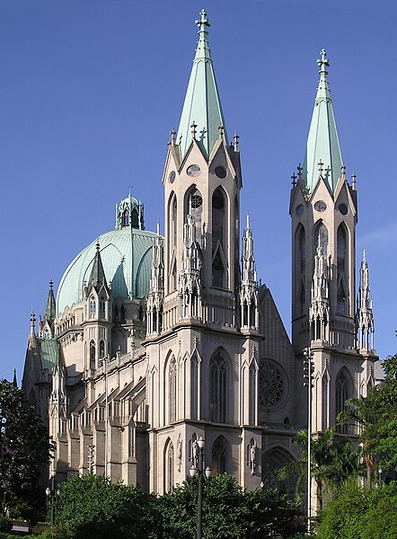
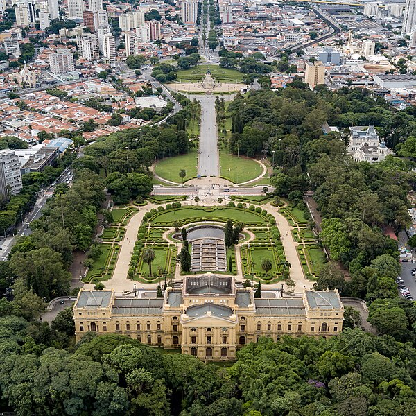
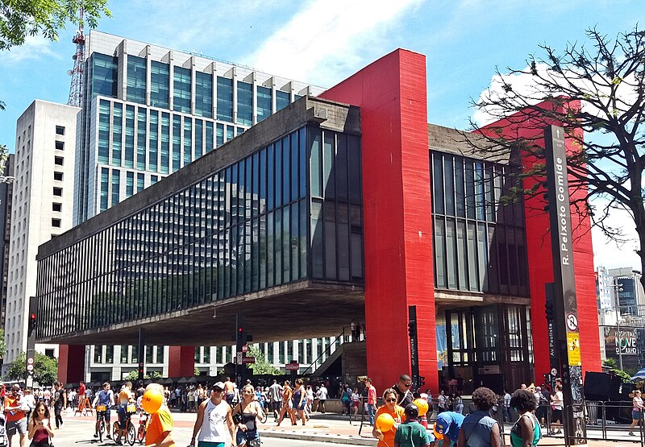
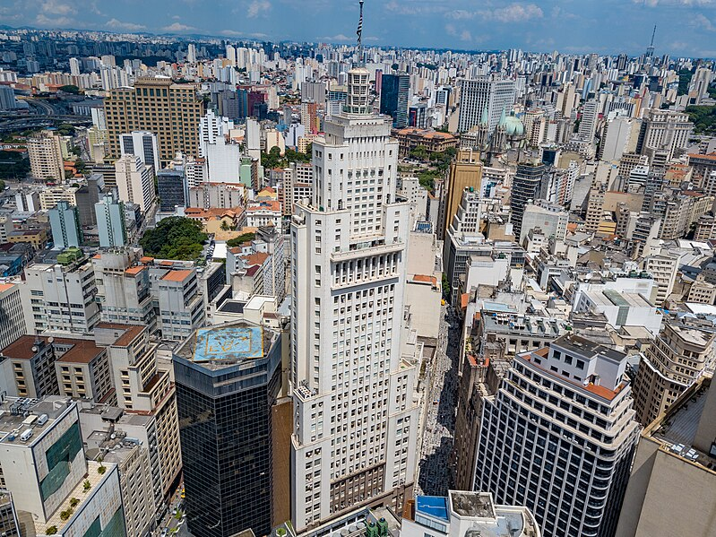
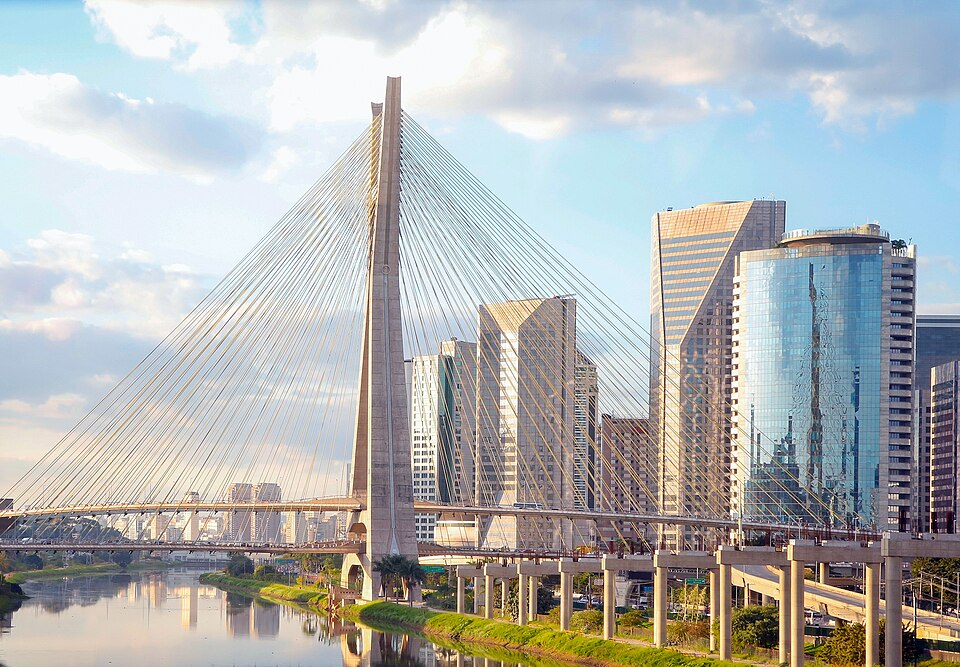

Try São Paulo’s famous mortadella sandwich at the Municipal Market, or enjoy a traditional feijoada on Wednesdays and Saturdays!
🎉 Upcoming Events
📆 Mar 25: Startup Pitch Night
📆 Apr 02: São Paulo Sustainability Forum
📆 Apr 15: Local Artist Showcase
📌 Did You Know?
São Paulo is home to the largest Japanese community outside of Japan!

São Paulo Cathedral

Ipiranga Museum at Independence Park

São Paulo Museum of Art on Paulista Avenue

Altino Arantes Building in Downtown

Octávio Frias de Oliveira Bridge and CENUMunicipal Theatre